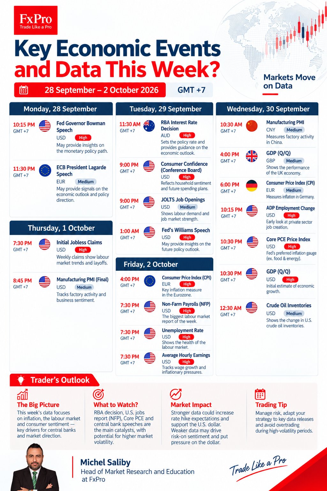
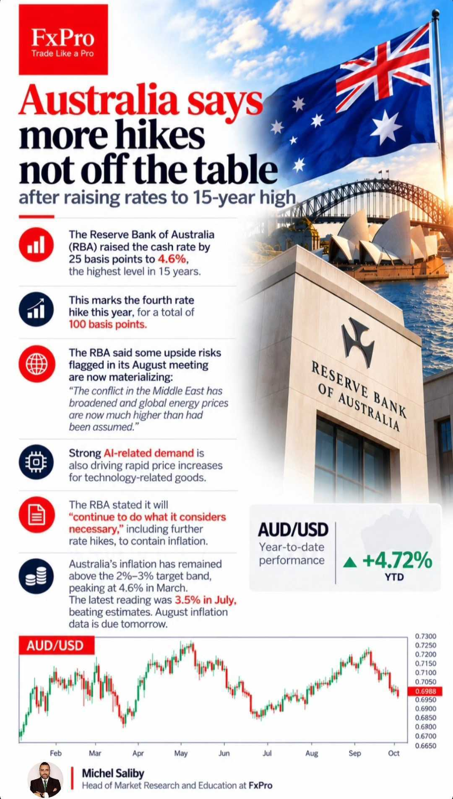

Market News / Weekly Performance Weekly Market Performance: 29 September 2026 29 September 2026 · Michel Saliby, Head of Market Research and Education, FxPro Weekly market performance: US sectors, major FX pairs and energy. Key economic events and data, 28 September – 2 October 2026 (times in GMT+7). Australia says more hikes are not off the table after raising rates to a 15-year high. OlderThe crypto market is poised to retest its highs ← All market news